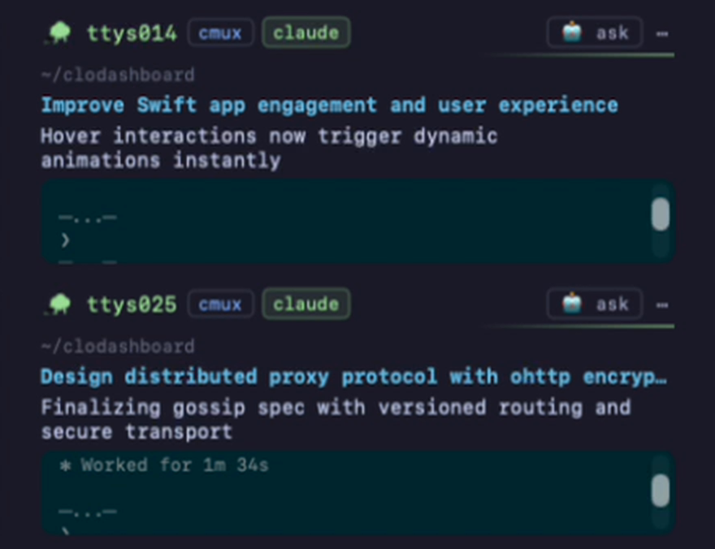
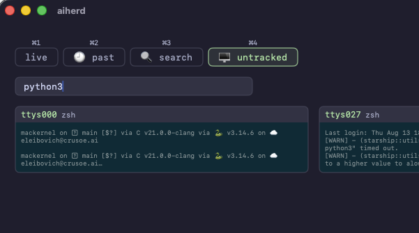
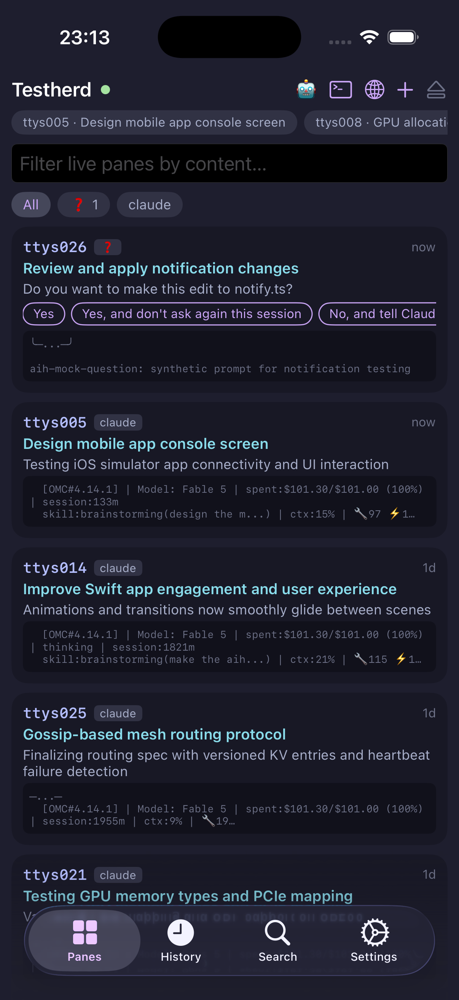
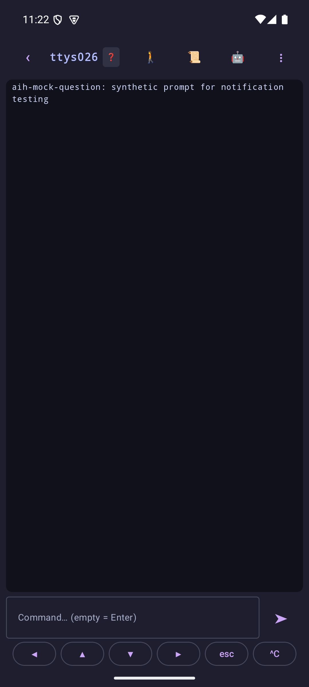
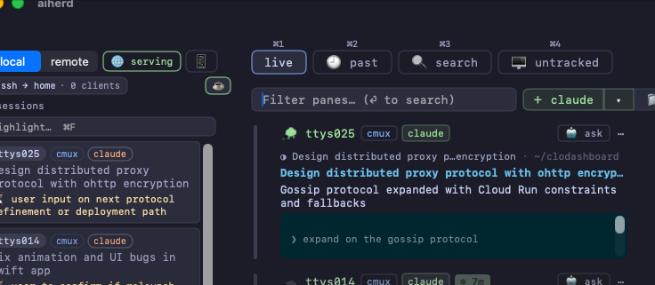
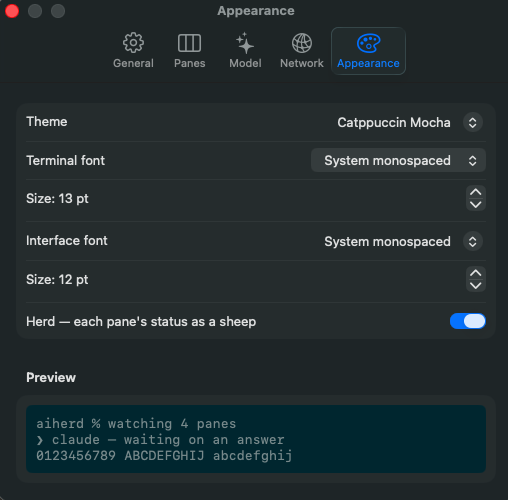

Watch every coding agent in one dashboard
You have six coding agents running in six panes. Five are working and one is blocked on a yes/no question. AIHerd tells you which.
brew install --cask aiherd-dev/aiherd/aiherdmacOS 14 (Sonoma) or newer · Apple Silicon or Intel
What it does
One dashboard over every terminal pane on the machine.
- Finds the panes running a coding agent —
claude,codex,agy,grokand a dozen others — and reads their screens. - A local classifier flags the pane that is waiting on a human, so it surfaces instead of hiding behind three windows.
- Works in iTerm2, Terminal, Ghostty, tmux, cmux and VS Code's terminal.
- Everything runs on the machine. Nothing is sent anywhere.
Features
Spots the pane that is waiting on you
Blocked panes are called out. The classifier ships inside
aih and runs locally.
Mac notifications for new questions
Turn on the 🔔 and a fresh question raises a macOS notification — never one you can already see.
Plain-language summaries
An in-process LLM writes what each pane did once it goes quiet. No Python, no venv — Metal on Apple Silicon.
Search the agents' own transcripts
Greps the conversations Claude Code, Codex, Cursor and friends keep on disk — even from before AIHerd ran — and ▶ resumes the one you pick, in its original directory.
Ask about a pane
A chat next to any pane: what the agent did, why it stopped, what the error means.
The herd shows itself
A sheep per tile: grazing while it works, head up while it asks, lying down when done. One toggle turns it off.

Claude Code background sessions
A background session is a Claude Code conversation with no terminal attached. No pane dashboard can see it — blocked, it waits forever in a window that does not exist.
- One row per session: task, directory, age, and state — working, blocked (and on what), done, failed, stopped.
- Hover to read its recent output; click to attach it to a pane. It keeps running either way.
- Panes already on the grid are left out — those you can see.
Follow any terminal
The grid shows panes with a recognized agent. The untracked tab
(⌘4) is everything else: a build script, an ssh session, a plain
shell you want an eye on anyway.
- One row per terminal, newest output first — program, command and directory, with the selected screen at full size beside the list.
- Track one and it joins the grid: capture, summaries, search, saved history.
- Captured only while the tab is open — an idle tab costs nothing.

Your herd, from anywhere
The agents run on the machine under your desk. The phone in your pocket answers what they're blocked on.
Four ways out, four ways in
- The herd cloud — one Serve button, no host to ssh to and no cluster in the middle. It hands out a link for the phone apps and one for any browser, each with a QR.
- The cloud carries bytes it cannot read: the apps and the browser encrypt every request to the herd's own key, so what it relays — screens, keystrokes, answers — it never sees.
- ssh to any host you can reach; tailscale
by address or published https name; kubernetes through a
cluster both machines can
kubectlto. Settings ▸ Network is the one place a herd is published. - On the cloud path the QR is a request to pair, not a key: it expires in 45 seconds, and scanning it only gets the phone a 3-digit code to read out — you say yes on the Mac, and that one yes admits exactly one device.
- The ssh, tailscale and kubernetes links carry a device token instead, so the far end is in without a round trip — the ssh one brings that host's key along, and both say so beside the copy and QR buttons. A device arriving without a link is approved by the same 3-digit code. All of them are listed in Settings and revocable.
- What each way out has carried, kept on disk so a restart doesn't zero it:
a Traffic window (⇧⌘S), the same page at
/traffic, andaih traffic— with request latency and a connection log under every transport's own panel. - The Mac stays awake while serving — ☕/💤 says which — and serving survives an app restart.
On the phone
- Native iPhone and Android apps: pane cards, live pane view, history, search, and notifications that deep-link into the pane.
- Pairing is one link or QR, scanned or pasted — over the cloud the phone then shows a code for you to approve on the Mac.
- No install needed either:
web.aiherd.devopens the herd from the same kind of link, in any browser. - Long-press a pane's screen to select and copy; the screen holds still while you do.
- Prose re-flows to the phone's width, tables keep their grid; arrows, esc and command recall ride the keyboard, ⇧ latches onto the next arrow, and ^ opens all 26 control letters — ^C, ^L, ^O and the rest.
- A dropped tunnel is a banner, not an empty screen.


Screenshots
A herd of claude sessions, watched from the Mac app.


Mouse support
Wheel and clicks go through to the real terminal, so a pane's own TUI responds as if you were sitting in front of it.
Terminal-specific: cmux forwards mouse events; iTerm2 and Terminal don't, and the button says so. tmux starts off, one click turns it on.
Usage
Open AIHerd.app and it starts aih serve itself.
The CLI drives the same server:
aih # serve on the Unix socket (the default)
aih serve -p 8080 # also serve on a TCP port, for a phone or browser
aih serve claude # only panes running a matching executable
aih find-terminals --no-monitor # print the panes AIHerd can see, and their TTYs
aih serve --tailscale 8443 # also serve on this machine's tailnet address
aih serve --kube https://kube.example:6443 # also publish through a cluster, as a relay pod
aih from-ssh me@build-box # tunnel that machine's herd to a local URL over ssh
aih from-kube https://kube.example:6443 # the same, through the cluster; --herd picks one--tailscale and --kube require device
approval; -p/--port is unguarded — point nothing public at it.
Narrowing to specific panes
--tty pins the dashboard to exact panes and ignores
the rest:
# find the panes you care about
aih find-terminals --no-monitor
# then show only those
aih serve -p 8080 --tty ttys002,ttys004,ttys007,ttys009Bare names or /dev/ paths, repeats or commas. The same
filter lives in Settings (⌘,), no restart needed.
Everything the dashboard knows, on stdout
Search, summaries and questions read the running server over its socket — no port, models already loaded:
aih summaries # what every pane is working on
aih questions # panes waiting on input, with their answer options
aih search "sentry crash" # live screens + history, each with its summary
aih search "sentry crash" --live # only what's on screen right now
aih search "trust prompt" --vector # only stored history, by meaning
aih search "trust prompt" --judge-tty ttys017 # ask the LLM if one pane is relevant, and why
aih summaries --json | jq -r '.[].topic' # --json on any of themPoint any of them at a different server with --url — a socket
path, or http://host:port for one started with -p.
aih traffic # bytes per way out over the last week
aih traffic --days 30 # further back, in wider columnsaih traffic reads the store on disk rather than a running
server, so it answers for a herd that is stopped — and over ssh with nothing
listening.
The summarizer
Summaries need Apple Silicon with 16 GB+. The model (~2.5 GB) downloads on first use; everything else works without it. Settings ▸ model picks which — Qwen3 4B by default, or any Hugging Face GGUF repo — switchable while the server runs. The environment variable wins at startup:
AIHERD_SUMMARIZER | Effect |
|---|---|
off | No LLM at all. |
unsloth/Qwen3-14B-GGUF | A bigger judge. Any Hugging Face GGUF repo works; without a filename, <repo>-Q4_K_M.gguf is assumed. |
unsloth/Qwen3-14B-GGUF:Qwen3-14B-Q5_K_M.gguf | An explicit file in that repo. |
What it installs
| Path | What |
|---|---|
/Applications/AIHerd.app | Native SwiftUI dashboard, universal binary. |
/usr/local/bin/aih | The CLI. |
Uninstall
brew uninstall --cask aiherd # app, CLI and bundled assets
brew uninstall --zap --cask aiherd # also the text index, settings and logsStop hunting for the blocked pane
One command, and every agent on the machine is in one window.
brew install --cask aiherd-dev/aiherd/aiherd